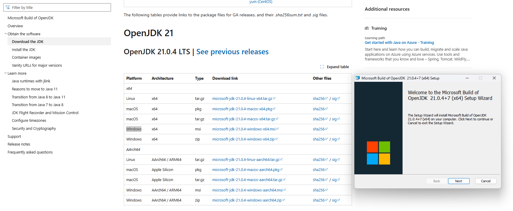
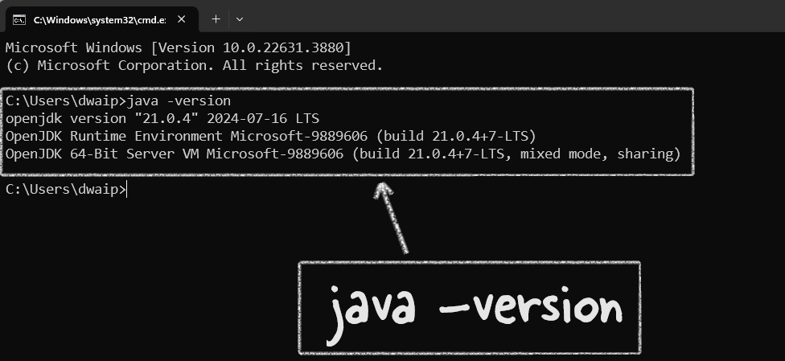
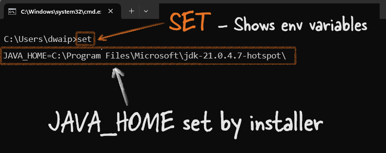

Installing Microsoft OpenJDK¶
There are many versions of JDK. Refer to the table at the end to see them. Here we will focus on OpenJDK. Many popular applications and platforms use OpenJDK as their Java runtime. For example, Minecraft (Java Edition), Apache Cassandra, Apache Kafka, Jenkins, and ElasticSearch all rely on OpenJDK. Development tools like IntelliJ IDEA and Eclipse also run well on it. Spring Boot applications, Atlassian products like Jira and Confluence, big data tools like Apache Hadoop and Apache Spark, as well as Docker images and web servers like Apache Tomcat and Jetty, commonly use OpenJDK. Even Android Studio can run with OpenJDK. So, OpenJDK is used a lot in real-world applications.
In this article I will give you a brief intro to Microsoft OpenJDK and how to install it.
When to Use Microsoft OpenJDK?¶
If you're using JDK in the Microsoft ecosystem, it's best to go with Microsoft's JDK. If any issues come up, you can easily get support from Microsoft. But if you're in a general setup or prefer tools not tied to one company, OpenJDK might be a better choice.
Microsoft also says their OpenJDK can replace any OpenJDK, even in non-Microsoft environments like AWS + Linux. Plus, their version has extra fixes and enhancements, making it work better in the Microsoft ecosystem.
Installation Steps¶
For Windows:¶
- Download and Run the installer:
- Go to Microsoft Build of OpenJDK website.
- Choose the Windows
.msiinstaller and download and run it. -
During installation, choose the option to set
JAVA_HOMEand update thePath.  -
Verify Installation and check JAVA_HOME variable
- Open Command Prompt and type
java -version. You should see the installed version of Microsoft OpenJDK - Enter
setin command prompt. It will show you all the environment variable. Look for JAVA_HOME to see if it is set properly. 
- Enter
{kind=link}
{kind=link}
{kind=link}
For macOS:¶
- Download Archive:
- Visit the Microsoft Build of OpenJDK website.
-
Download the
.tar.gzarchive for macOS. -
Extract and Install:
- Open Terminal and navigate to the downloaded archive.
-
Extract it using:
-
Set JAVA_HOME:
- Add the following to your
.bash_profile,.zshrc, or.bashrc: -
Apply changes with:
-
Verify Installation:
- Run
java -version - You should see the Microsoft OpenJDK version installed.
For Linux (Ubuntu/Debian):¶
- Download Archive:
-
Head to the Microsoft Build of OpenJDK website and download the
.tar.gzfor Linux. -
Extract and Install:
- Open Terminal and navigate to the download location.
-
Extract using:
-
Set JAVA_HOME and Update Alternatives:
- Add to your
.bashrcor equivalent: -
Set as default:
-
Verify Installation:
- Run
java -version - You should see the installed Microsoft OpenJDK version.
Conclusion¶
Microsoft Build of OpenJDK is just like the regular OpenJDK when it comes to working with apps. The main difference is that it's made by Microsoft, so it might work better with Microsoft products. Plus, if you're using it on Azure and something goes wrong with Java, you can get help from Microsoft support. In short, it's basically OpenJDK with Microsoft's name on it.
JDK Brands¶
| JDK Version | Free to Download | Advantages |
|---|---|---|
| Oracle JDK | Yes (for personal use, development, and testing)** | Official JDK from Oracle, commercial support, and long-term updates available. |
| OpenJDK | Yes | Open-source, reference implementation of Java SE, widely supported. |
| Amazon Corretto | Yes | Production-ready, free support, optimized for AWS, multiplatform. |
| Eclipse Temurin (AdoptOpenJDK) | Yes | Free, well-supported, and widely used in various environments. |
| Microsoft Build of OpenJDK | Yes | Free, optimized for Azure and Microsoft products, integrated with MS ecosystem. |
| GraalVM | Yes (Community Edition) | High-performance, supports multiple languages, ahead-of-time compilation. |
| Azul Zulu | Yes | Certified OpenJDK build, various support options, optimized for enterprise use. |